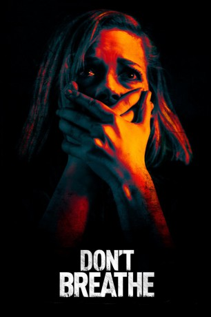

#4575 Don't Breathe
 gesehen am 02.11.2016
gesehen am 02.11.2016
 
 IMDB-Wertung: 7.3 / 10
IMDB-Wertung: 7.3 / 10  Tomatometer: 88
Tomatometer: 88  Metascore: 0
Metascore: 0 
Der Vater von Alex (Dylan Minnette) arbeitet im Sicherheitsgeschäft – sehr praktisch, wenn man wie Alex ein Dieb ist. Das Insiderwissen hilft dem jungen Mann, die teuren Sicherheitssysteme reicher Leute zu überwinden und in Villen fette Beute zu machen. Alex ist auf diesen Diebestouren nicht allein: Rocky (Jane Levy), als sein heimlicher Schwarm die Hauptmotivation für die Einbrüche, begleitet ihn, um sich und ihrer kleinen Tochter ein besseres Leben zu ermöglichen. Dritter im Bunde ist Money (Daniel Zovatto), Rockys Freund, der des Kicks wegen mitmacht. Ein Kick der besonderen Art steht dem Trio bevor, als es in das Haus eines Kriegsveteranen (Stephen Lang) einsteigt, der nach dem Unfalltod seines einzigen Kindes ein großes Schmerzensgeld bekommen haben soll. Der Veteran ist blind, was kann also schiefgehen? Nun, eine Menge…
Jahr: 2016
Dauer: 88 Minuten
FSK: 16
Land: USA Studio: Screen GemsTonspuren: DD5.1 - ,
Untertitel: Deutsch, Englisch,
Auflösung: 1080p (1920x800) Größe: 6963 MB
Genre: Thriller, Horror, Krimi
Regisseur: Fede Alvarez
Drehbuch: Anne Chaplin Hansen
Soundtrack:
Darsteller:
 Stephen Lang als The Blind Man
Stephen Lang als The Blind Man Jane Levy als Rocky
Jane Levy als Rocky Dylan Minnette als Alex
Dylan Minnette als Alex- Daniel Zovatto als Money
- Emma Bercovici als Diddy
- Katia Bokor als Ginger
 Sergej Onopko als Trevor
Sergej Onopko als Trevor- Jimmie Chiappelli als Coroner , uncredited
- Jane May Graves als Cindy Roberts , uncredited
- Michael Haase als Detroit Police Officer , uncredited
- Brak Little als Neighborhood Man , uncredited
- Franciska Töröcsik als Cindy
- Christian Zagia als Raul
- Olivia Gillies als Blind Man's Daughter, Young Emma
- Dayna Clark als TV Anchor
- Athos als Dog
- Astor als Dog
- Nomad als Dog
Datei: X:\2016(A-F)\Don't Breathe (2016, FSK16, 1920x800).mkv seit 17.10.2016
Festplatte: HD 2016(A-Z)
 Es gibt insgesamt 147 Filme in der Gruppe '2016(A-F)'
Es gibt insgesamt 147 Filme in der Gruppe '2016(A-F)'